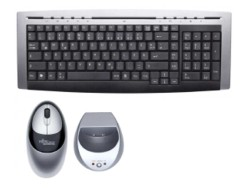

#54404 36 2005-03-16T12:21:30Z ~$ib4lmaniac Can anyone think of an avatar cross for me?
Edit: This is the best I could do

#104410 16 2005-09-29T11:19:00Z ~$ib4lmaniac Episode 0: 11 gold - 60.775.
Picked up the gold on the final bar of lockness

#104412 18 2005-09-29T11:49:18Z ~$ib4lmaniac You'll work it out if you look/ask hard enough.
#104437 21 2005-09-29T14:43:07Z ~$ib4lmaniac Well seeing as I can't find the original, I'll just tell you

I'm trib4l, and at the time I
did have fastest on Mount Doom (pre-1.4 so Numa only).
This name is a hybrid: trib4l[maniac syn]tax.
#104443 23 2005-09-29T15:10:18Z ~$ib4lmaniac That's the chap. And no - 'fraid not
#104634 28 2005-09-30T09:12:59Z ~$ib4lmaniac Tsublizzy's much older I believe, and I haven't ditched my real name.
@JF: Help yourself, I've been top for to long anyway
 *Wonders what life in 2nd is like...*
*Wonders what life in 2nd is like...*
Hmm, I don't like this

#104666 30 2005-09-30T16:02:44Z ~$ib4lmaniac I just don't like to think that I will be 0th just because you left... 
Took two of yours on 89.
So now you can feel like a man

#105745 32 2005-10-05T13:24:39Z ~$ib4lmaniac #105957 286 2005-10-06T15:08:06Z ~$ib4lmaniac Possiby referring to 01-0. Currenlty dhNinja is 0th and some other wannabe is in 1st

#107022 303 2005-10-10T14:16:05Z ~$ib4lmaniac Nah, not lurking. I just had a couple a hours spare.
Maybe I'll find a few more soon...
")
#107045 73 2005-10-10T15:33:20Z ~$ib4lmaniac Nevermore : Foreverless
Actually, it would be Alwaysless. And I personally thinking multiple accounts can be quite useful.
#107878 7 2005-10-13T10:33:00Z ~$ib4lmaniac Wow, I didn't realise you could do that. Could you please combine all of my alternative Numa accounts please?
My other names are maximo, nevermore, tktktk, blue_tetris and Atramentis.
#109296 8 2005-10-20T10:31:10Z ~$ib4lmaniac You guys pwn. My own thread and everything

#109321 11 2005-10-20T14:40:26Z ~$ib4lmaniac 67-1 is the only one I can remember doing today, although I may have done one or two more. 72-0 will fall!!
Edit: Oh yeah, 67-0 as well.
#109505 5 2005-10-21T10:19:32Z ~$ib4lmaniac I've only been waiting for these feeds for about oooh... 6 months?
Whenever you're ready

#109507 32 2005-10-21T10:28:39Z ~$ib4lmaniac Haven't doen this for a while...
Quote
Self: 60033
Mines: 22009
Floor Guards: 3780
Gauss Turrets: 5614
Rocket Turrets: 5303
Chaingun Drones: 1394
Laser Drones: 2889
Drones: 15609
Thwumps: 3631
Total: 120262
I'd estimate at around 130-140k overall. My saves are quite dispersed
#109527 326 2005-10-21T14:02:14Z ~$ib4lmaniac When I started playing N, I practically worshipped trib4lmaniac/trib4ltax.
It doesn't really matter what you do, but I prefer just trib4lmaniac or trib4l or whatever. trib4ltac sucks as a name
Nice to have a follower though

#109653 4 2005-10-22T08:48:38Z ~$ib4lmaniac To be honest, I feel like it relies much less on skill and speed, and more on luck.
You're wrong there. As with all things: practice, practice, practice. I can do it quite regularly now.
#109703 3 2005-10-22T14:52:28Z ~$ib4lmaniac I hate that level. I hate it so much I had forgotten it was one of my zeroths!
I actually went to go and take it from whoever when I saw this thread.
#110158 338 2005-10-24T10:40:19Z ~$ib4lmaniac IMO johnny is now an established player in his own right. I'm sure I would be hard pressed to keep a lot of my scores from him even if I were here.
Keep up the good work JF, I hope you can pull off what I never accomplished... over 300 zeroths (I reckon I got pretty damned close though
)
#110162 16 2005-10-24T10:46:11Z ~$ib4lmaniac Wow, excellent Melchoir. I'd have a go myself but I can't remember the route without having yours right next to me
*gets out pen and paper*
#110409 6 2005-10-25T14:52:13Z ~$ib4lmaniac trib4l is going to have a it when he sees this.
What makes you think that? I've seen it coming for a while now. I've been watching Eeyore edging closer and closer to zeroth in the past few months.
I've lost 00-0 seemingly thousands of times and I've always returned the favour
Major, major kudos Eeyore.
#110414 7 2005-10-25T15:18:32Z ~$ib4lmaniac Lol, glad I remembered this

come on theres gotta be a limit! Ok then. Prove me wrong. Get....251.000 or more and I will make whoever does it a dedication map and I will put a sentence in my sig that says anything you want.Anything.
Quote: glenno14 a few posts down
alright then i'll set my sights a bit lower....250.750
Taken from
this thread.
#110596 7 2005-10-26T09:35:33Z ~$ib4lmaniac RSS feeds M&R
You're onyl making it worse by making us request
every damned score page in existance!!!
One nice feed with it all on (or better yet, customizable via GET data) would reduce the load on your server immensely
I'm sure someone here with adequate knowledge of PHP would be willing to do it for you (a.k.a. me) if you don't have the time.
Edit: @Eeyore
Quote: Your program right at the end
---------------------------
Project1
---------------------------
Run-time error '13':
Type mismatch
---------------------------
OK
---------------------------
No list file created
Edit 2: Never mind. Works if you put it in a folder, apparently not on the desktop.
Edit 3: Meh, now it works on the desktop too, forget I said anything.
Edit 4: Actual problem this time. You've forgotten the comma after episodes in the list file.
Quote
"3","trib4lmaniac",
"4","Seifer",
"Episode 02","pokemaniac1342"
"0","trib4lmaniac",
"1","trib4lmaniac",
"2","blobglob",
"","spect",
"3","clux",
"4","blobglob",
"Episode 03","trib4lmaniac"
"0","glupi_zmaj",
"1","glupi_zmaj",
#110615 69 2005-10-26T13:47:05Z ~$ib4lmaniac I spent a whole freakin hour and a half trying to do that a couple of weeks ago!
#110832 18 2005-10-27T12:53:13Z ~$ib4lmaniac I've got a couple of Live CD's around somewhere.
#110835 160 2005-10-27T13:14:54Z ~$ib4lmaniac Quote: My Clipboard
$first_loop = false;
PHPing.
#111094 344 2005-10-28T13:04:25Z ~$ib4lmaniac I'm not entirely sure I reached the legendary 181 I'm afraid, it'd be awesome if I did though. I defintely came darn close
#111256 7 2005-10-29T12:37:49Z ~$ib4lmaniac I thought of this a few months ago when Afterthought did his original run. I tried but after getting it twice and neither of them having anywhere near enough power to launch me through the roof - I gave up
#111257 6 2005-10-29T12:41:53Z ~$ib4lmaniac I have real issues with this level. I hate it.
#111621 10 2005-10-31T14:04:39Z ~$ib4lmaniac What has resulted in the two different numbers? What makes the one on the main page official?
Deleted post ID's wouldn't be reused.
#111932 30 2005-11-02T15:48:28Z ~$ib4lmaniac And trib4l's world falls just that little bit further apart
#112046 5 2005-11-03T10:46:35Z ~$ib4lmaniac #112290 9 2005-11-04T10:11:06Z ~$ib4lmaniac Aye, but I didn't spot the error for a few minutes whilst parsing your files in PHP. All's good once discovered but...
#113390 8 2005-11-09T09:49:17Z ~$ib4lmaniac I wouldn't visit your site, much as I like your maps

...then again, I don't visit Numa either
#113406 36 2005-11-09T12:57:46Z ~$ib4lmaniac Here's a beatable one: Episode 46, 3 gold, 47.675 on the clock. Have at it!
52.225 - 3 gold.
Edit: Try episode 75.
0.825 - 23 gold :S
Edit 2: And episode 86.
22.400 - No gold.
Edit 3: And episode 28.
16.450 - 13 gold.#113521 8 2005-11-10T09:36:24Z ~$ib4lmaniac Meh, maybe he should have my title now. Im certain that hes the new ubermaster by now
#113522 22 2005-11-10T09:50:43Z ~$ib4lmaniac he literally did walljump off 1 pixel or something equally small.
I think it's more in the range of 3-5 pixels. But still incredible new innovation

Why the heck doesn't my brain see this obvious tricks
#113780 10 2005-11-11T09:11:48Z ~$ib4lmaniac Meh. X-Boxes are PCs stuffed in a different box with some minor modifications.
HOW DARE YOU!?
xbox rules!
He's right though, and I don't see why that's an insult.
And I highly doubt those are cutscenes - they look far too bad for that!
And FYI the scenery in pgr3 is awesome.
#114919 365 2005-11-14T15:35:03Z ~$ib4lmaniac Lol, can't believe he's taken so long
I thought I'd lost my grandmaster status weeks ago.
#114921 46 2005-11-14T15:40:52Z ~$ib4lmaniac How could you give LV a 90 Atilla? 95
at least 
iangb is cool. Registered a day over a year ago! That means my Metaday shoud be coming up soon as well...
Edit: Sorry jflash, didn't see that you'd seen that first 
88/100
#114923 25 2005-11-14T15:45:24Z ~$ib4lmaniac HL2 run's on just about anything. Looks terrible sometimes, but it usually runs!
#115194 368 2005-11-15T10:02:39Z ~$ib4lmaniac Congrats JF on taking Episode 0. ORHSFdammit i so wanted it.
I guarantee I wil take that score back (or at least as it stands).
Still
plenty of room for improvment.
#115197 64 2005-11-15T11:02:58Z ~$ib4lmaniac I don't know you
18/100
#115198 39 2005-11-15T11:05:52Z ~$ib4lmaniac You got no gold on episode 86? Guh. That can't be right. I'm not even trying that one, I'm on 86-1 with 50 seconds on the clock, 2 gold picked up, and no chance.
Oops, type. Meant
76 :S
Edit: Episode 64 - 52.650 - 6 gold.
Edit 2: 60-2 - 59.725. Level 2 only.#115397 32 2005-11-16T09:52:19Z ~$ib4lmaniac Haven't read the thread. But unless you have a viable alternative to ratings then I'd offer up a huge resounding
no.
Edit: Okay read the thread 
Well, adding onto the bash.org-esque idea, the rating would be in a fractional result. There could be 4 options: + (adds 1, so 1/2 becomes 2/3), - (adds to the total amount of ratings without adding value, so 1/2 would become 1/3), in between (adds half, but adds a whole to the total votes, so 3/5 would be 3.5/6), and comment only. Ranking (if we should even bother with them) would be by percentage. This isn't like the favorites idea, because with that you would generally only add maps that you absolutely loved, and not much else. You still might like a map, but wouldn't favorite it. With this, you can just give a simple opinion of good, bad, or alright.
Isn't this just another ratings system that works pretty much the same as before but with options 0, 1 and 2 only. Surely the same old pro's and con's would apply
And what's with all this "golden age" crap? This "golden age" really wasn't that different to today (at least as I remember it). Sure the were less n00b maps flooding the boards but I still enjoy Numa as much as I did then 
#115400 48 2005-11-16T10:16:09Z ~$ib4lmaniac Another vote for 88-4/
#115474 81 2005-11-16T19:23:14Z ~$ib4lmaniac /me is confused.
72/100
#115620 85 2005-11-17T10:00:02Z ~$ib4lmaniac Why create a new account with the name trib4ltax when you could have just asked keron for a name change?
It's temporary (hopefully).
#115790 10 2005-11-18T08:54:12Z ~$ib4lmaniac for one, it would really make the level data much longer.
2 bytes per gold piece

#115801 14 2005-11-18T12:00:02Z ~$ib4lmaniac Trib4l, one character is one byte...
and for the angle you'll need 2 very very accurate floating point numbers, like the ones Flash uses. Which means, not 2 bytes, more like 30. Per gold piece! 
TS
I think he's only asking for a single, 45 degree variant of the existing gold.
Edit: And besides, why do you need "2 very very accurate floating point numbers"? Just specifying an angle (0-359) would suffice.#116088 6 2005-11-19T11:39:25Z ~$ib4lmaniac trib4lpower
Seriously though, I'd love to be usurped
Would it have to be ubermaster though? I'm up for a change. Any suggestions?
Furthermore, JF got his 0th because trib4l stopped playing N (for whatever reason).
I'd only have been prolonging the inevitable. JF would have overtaken me in a few months anyway. He is the new ubermaster and if anyone should have this title it is him
Edit: Sorry, I think I should say that title on this account.#116118 25 2005-11-19T12:51:51Z ~$ib4lmaniac That's not tiny text, by the way. That's white text.
I think I like the gold square, actually. It's more representative of gold bars. Also, if gold was circular, the world would implode.
It's tiny and white. In fact, it's so small it's invisible even if I change the colour to bright red. Or is my browser messing up?
I've covered this before somewhere. Depending on what you do, it can display differently in different browsers.
Searches...
Found it.
#116138 41 2005-11-19T14:01:01Z ~$ib4lmaniac 60-2: Nice level choice. 75.675!
edit:Make that 76.425
77.825. Can be pushed up to 79/80ish I reckon.
Edit: 79.625
Edit 2: 80.050 - Oh yeah!#116213 16 2005-11-19T18:47:04Z ~$ib4lmaniac Just a rival, who lost his predator.
Don't you mean prey?
@mascote:
There's definitely a difference between trib4l and JF. He was only passed because of diminished play-time. I'm quite sure he could have done this on some other columns if he had kept playing as much.
Infact, trib4l did the same with Column 9
Only time will tell if JF can replicate or - shock, horror! - surpass my wonderous achievments.
I, for one, am backing him all the way.
I think.
Edit: LouDog! You're back!!! Where have you been? (Or have I just been asleep?)#116512 38 2005-11-20T18:07:28Z ~$ib4lmaniac 00-0 back in my bag of tricks.
Took it yesterday to celebrate my Meta-birthday (Now a year and a day since I joined the forums!) along with a couple of others
#116801 41 2005-11-21T15:05:08Z ~$ib4lmaniac Pretty darn good, but it looks like you might have lost some time in that bottom right part with the three pieces of gold arranged in a right angle.
Oh yeah. Blatently no where
near perfect. Just good to have it back
#116805 19 2005-11-21T15:18:48Z ~$ib4lmaniac The Batman offer says further purchases neccessary anyway
Maybe it was different when pariah did it?
#116992 11 2005-11-22T12:13:15Z ~$ib4lmaniac *Signs*
#116998 132 2005-11-22T13:22:12Z ~$ib4lmaniac Wedgie FTW
79/100
#116999 44 2005-11-22T13:26:32Z ~$ib4lmaniac *drool*
42-4, 68.800, very improvable.
I'm pretty sure I already pwned Daddaluma no-golding this.
*Searches*
77.600#117006 42 2005-11-22T14:44:10Z ~$ib4lmaniac All your episode 00 are belong to me
#117249 65 2005-11-23T09:20:58Z ~$ib4lmaniac I don't think I've ever read the rules properly
#117250 29 2005-11-23T09:23:38Z ~$ib4lmaniac /me waits for the Revolution...
#117363 204 2005-11-23T18:38:20Z ~$ib4lmaniac Quote: My Clipboard
case 'mysqlError':
return $this->_mysqlError;
More PHP for a change
#117364 149 2005-11-23T18:43:58Z ~$ib4lmaniac trib4l what did your post mean? kinda weird seeing that face lol :S
I love you (in a non-gay sense of course).
Don't know you from Adam blackhawk, so... 25/100.
#117574 286 2005-11-24T11:01:15Z ~$ib4lmaniac You've got Jiggerjaw in the 0th column twice. I'm a little suspicious of him too
#117810 12 2005-11-25T09:37:58Z ~$ib4lmaniac Amatuer sites with inconsistant layout are not so uncommon, after all.

I know I don't have much content on there or anything, but that's just uncalled for!
I have big plans for n-vision that will probably never see the light of day.
#117848 164 2005-11-25T13:56:38Z ~$ib4lmaniac jflash must just spend too much time on the boards
81/100 - You rock
#118463 8 2005-11-27T12:52:20Z ~$ib4lmaniac You'd probably have to ask Keron.
#118464 181 2005-11-27T12:53:23Z ~$ib4lmaniac (
maestro's rip-off top 5 list of personal popularity
1) Kablizzy
2) LV
3) blue_tetris
4) sweep
5) trib4lmaniac
)
Better give you a high rating now
89%
#119018 195 2005-11-29T09:52:47Z ~$ib4lmaniac 62% - I don't know you too well
#119019 4 2005-11-29T10:07:53Z ~$ib4lmaniac If it takes me more than 10 minutes I'm losing my touch...
Edit: Done
Called up by a lecturer so take off a couple of mins from the edit time.
Edit 2: Which makes it exactly 10 minutes and an improvement of over a second #119020 382 2005-11-29T10:21:53Z ~$ib4lmaniac Meh, .650
#119262 290 2005-11-30T09:38:40Z ~$ib4lmaniac Okay, that is seriously *INSANE*
#119263 204 2005-11-30T09:43:23Z ~$ib4lmaniac 32/100.
Why is almost everyone's prediction divisible by 5? That should only be happening 1/20th of the time.
Lancer deserves more! He's a complete vetran!
85% for you
#119264 5 2005-11-30T09:49:28Z ~$ib4lmaniac Brilliant, JeR(K)'s back. Any chance of finishing the encrypted alphabet?
#119299 8 2005-11-30T12:56:57Z ~$ib4lmaniac I don't see anything astounding in that run
#119300 206 2005-11-30T12:58:13Z ~$ib4lmaniac not for the username, though.
trib4lmaniac may yet return
I think I've already rated you so I won't again (unless I actually haven't in which case uh... sue me).
#119520 296 2005-12-01T11:42:22Z ~$ib4lmaniac There's a shop called "trib4lmaniax"
Edit: Dammit, it's actually an A not a 4 
#119593 21 2005-12-01T18:51:54Z ~$ib4lmaniac they spend hours on these demos
Pshhhh... nah
#119595 299 2005-12-01T18:52:58Z ~$ib4lmaniac Also, you'd probably dominate the one life challenge if you tried.
Hell no! I hat this competition

I cannot show patience for the life of me my ninja.
#119767 225 2005-12-02T08:52:20Z ~$ib4lmaniac 12/100 - You own a PSP
#119768 39 2005-12-02T08:53:19Z ~$ib4lmaniac The 360 was released today in the UK. It's been out for 8 hours and 53 minutes so far.
#119817 41 2005-12-02T15:36:19Z ~$ib4lmaniac Good to know that Microsoft have the best birds included in their latest console. Very good indeed.
Yeah, but this is Microsoft remember. You have to buy the "Ornithologist Package" to use these features
#120096 6 2005-12-03T16:10:44Z ~$ib4lmaniac Been playing this at college for like.. a year.
#120097 236 2005-12-03T16:12:19Z ~$ib4lmaniac ^Sony Fanboy: Down to 2.5%
#120098 23 2005-12-03T16:14:35Z ~$ib4lmaniac @trib4l:
Every time I try to encourage a n00b to work harder and he'll get better results, trying to boost his confidence, someone has to shoot it down again. Just great. Look trib4l, he's crying. See what you did?! I'm disappointed in you...
I just don't want anyone to think that I actually
work for my highscores, sheesh
#120595 267 2005-12-05T15:50:36Z ~$ib4lmaniac is it not possible that a member's average rating of others is actually an indication of their own popularity?
You're so wrong.
180/100
#120855 305 2005-12-06T09:46:48Z ~$ib4lmaniac #120856 2 2005-12-06T09:48:53Z ~$ib4lmaniac 18-2: Watch it in Ned.
I'll edit this with a 71-4 demo in a sec.
Edit: Best I could do I'm afraid Attachment (lost): post-23-1133864562.txt
#120857 279 2005-12-06T09:49:40Z ~$ib4lmaniac 84/100. Boosted slightly because of your awesome av.
#120888 282 2005-12-06T14:11:29Z ~$ib4lmaniac 91/100. Your likeness was presented in issue 20 of my comic, if you didn't know.
Darn, no!
#121462 25 2005-12-09T10:18:37Z ~$ib4lmaniac JF made a post saying that he doesn't spend more than 15 minutes on a level at a time.. I don't know if he's joking but... 
I'm pretty sure he's not
Of course he'll spend more sometimes, but the mojority of taken scores are probably about 15 minutes.
#122571 5 2005-12-13T09:42:57Z ~$ib4lmaniac If M&R would give me let me finish the RSS feeds...
#122572 12 2005-12-13T09:43:17Z ~$ib4lmaniac #122852 29 2005-12-14T09:47:02Z ~$ib4lmaniac Sorry to double post, but I think this thread deserves bumping. Plus, this run outdoes ANY run I have ever seen. It is THE most impressive highscore in my book, and I would love to nominate it for the dronies, but I think nominations are closed. This run deserves MUCH more attention, because 42-3 represents a new level of skill and innovation that many 0th highscores lack. I see a lot of highscores that are a result of moderate practice and a lot of skill, but I think that using some of the more advanced techniques, like the ones showcased by Naem in his run, or even like in 00-0 by Trib4l, many more 0ths could be achieved. I think it's time someone gave JF and trib4l a run for their money (not saying it's me though, I think my highest score is a #5 or so).
Maybe overreacting
slightly. It;s a good run but I've seen runs which are more impresive IMHO.
Then again, maybe good highscores just look less impressive these days
#122853 11 2005-12-14T09:49:33Z ~$ib4lmaniac XML feeds
...
#123091 7 2005-12-15T08:57:45Z ~$ib4lmaniac I think it's better with the ridiculous highscores. Normal-ish looking highscores slip thru far our steady gaze far more often! I'm sure there are a few still around that are only top 20's.
#123160 9 2005-12-15T15:16:02Z ~$ib4lmaniac All possible with feeds. It's up to the programmers to use the feeds how they like.
I'm sure LoD, Eeyore and co. will do something with them
#123163 4 2005-12-15T15:19:40Z ~$ib4lmaniac No highscore ownerers left now. That's a shame.
I don't think the remaining elite play enough to do what me and JF have done (ridiculous amounts of 0ths).
#123423 13 2005-12-16T11:38:07Z ~$ib4lmaniac The server tracks high score data. Perhaps the frame-length of the high score could be translated into a value that could be subtracted from the maximum possible score. That means that if they grabbed every possible gold the server could calculate their precise score.
The demo data doesnt tell you how much gold was picked up. You'd have to actually run the replay to tell that. But if they have highscores actually running then they can just check the final time anyway
#123931 51 2005-12-17T16:32:46Z ~$ib4lmaniac 3rd super-highscorer!? 90-3 is probably one of the most impressive runs I've ever seen! How the hell do you use both shift keys. I've done that before but never to that effect.
#123960 6 2005-12-17T17:22:23Z ~$ib4lmaniac Nintendo = God of All.
You are a fellow worshipper, AV. Come. Rejoice. Play the surprisingly addictive Mario Party 7.
*me tears around in his straight jacket*
I don't care what the critics say. They don't realize how addictive these games are!! They're just jealous of Nintendo's superior brand value and memorable chara--*muffled by men in white coats*
I'm pretty sure Nintendo = "Leave luck to heaven" or somesuch like
And I am a fellow worshipper. Looking forward to Mario and Zelda Revolution

#123964 6 2005-12-17T17:25:07Z ~$ib4lmaniac Purely out of interest, what frame rate do you have on that level?
#124704 394 2005-12-19T16:42:47Z ~$ib4lmaniac *looks at JF, then spect, the see's if trib4l is still about*
Wasn't me sah
#125189 18 2005-12-20T15:20:28Z ~$ib4lmaniac I personally don't think trib4l's current 0th can be beaten...we'll see though.
I personally think you;re wrong
#125191 32 2005-12-20T15:24:11Z ~$ib4lmaniac Shift: Jump
Left: Left
Right: Right
Boss Mode: Z
Kill: D
Continue: Space
Needed the kill and boss keys a bit nearer :lol;
#125194 20 2005-12-20T15:26:49Z ~$ib4lmaniac uppercase is soooo 90's. never ever ever *ever* use capital letters!
#126642 5 2005-12-24T15:03:02Z ~$ib4lmaniac The hosts are being a pain. They won't give me a dump of my database contents.
That means the tricks and shoutbox and user log ins will be reset... and my news
@rseholes!
#126703 9 2005-12-24T20:54:47Z ~$ib4lmaniac They won't give you a database dump? Why not? (Sue them!
Anyone any good at writing strongly worded emails that would actually
get results?
#127074 422 2005-12-26T15:14:43Z ~$ib4lmaniac Hehe. Yeah, I still don't trust you. Maybe you can edit the .sol or something. It's just that this is (almost) impossible.
But if you really can, it's okay.... just amazing....
I think you;re probably being a litle too suspicious. Credit where credit is due. He is immense.
The worst of it is, me and JF are ~5x more on the death counts. Think how good this guy is gonna be in a year
#127075 23 2005-12-26T15:17:48Z ~$ib4lmaniac I tried it in FBF.... but I wasn't able to do this.
The first jump is:
- run against the wall
- 1 frame jump
- 1 frame nothing
- 1 frame jump
- hold jump and right until you get to the slope on the right.
I can't believe you can do that without FBF....
I can do it one in about every 30 trys.
Edit: @tktktk: I thought we'd slackened the double posting rules #127076 32 2005-12-26T15:19:39Z ~$ib4lmaniac Zero. No other game has entertained me for so long.
Other games might have better graphics and other duch eye-candy, but the gameplay of N is truely immense.
#127077 2 2005-12-26T15:22:13Z ~$ib4lmaniac Explains why I'm at 500.
Example
Edit: Damn 543. I've fallen 43 places in a day #127609 24 2005-12-28T11:35:03Z ~$ib4lmaniac To think he only took his first 0th a month ago
#129445 25 2006-01-03T12:14:14Z ~$ib4lmaniac Still dont see what's so great about spect's 11-4
And I'm the only one who gave Melchoir's runsany votes at all!
#129446 442 2006-01-03T12:19:35Z ~$ib4lmaniac well that is fast, 5 0ths in a day?! if you go on at this rate it'll take you less than a month to pwn us all lowly beings.
I was probably taking 20 or so a day at my peak
None of the quality of his though
#129878 16 2006-01-05T10:56:11Z ~$ib4lmaniac but hey, I voted naem as #1 player of the year
Player of the year after a month!?
#129880 56 2006-01-05T11:05:55Z ~$ib4lmaniac It is quite strange how his 42-3 movie is cropped to perfection.
Still, innocent until proven guilty and all that jazz.
Edit: Watch the 90-3 replay on this .sol file. Only did it quickly in FBF so forgive the awfulness of it. The two missed gold pieces stop people from submitting it too Attachment (lost): post-15-1136461161.zip
#129901 59 2006-01-05T13:08:00Z ~$ib4lmaniac It's okay, I'm not sccusing him of anything. I'm can do the quick jumps myself if I keep at it for long enough. Just not so good as him.
#130157 462 2006-01-06T12:02:08Z ~$ib4lmaniac Jumping off the slope let's you straight thru the drones
#6173 1 2006-01-11T10:02:45Z ~$ib4lmaniac *me mac user* hahaha, stupid windows, i have had my comp for 3 years and i still havent even heard of a decent virius for mac, the biggest ones just wip your safari preferences, and i still havent got one, and still without patches
If mac's dominated 95% of the computing world, they'd have virii too!
#131856 20 2006-01-12T09:34:03Z ~$ib4lmaniac All teh levels is teh easy!
#131861 481 2006-01-12T10:07:48Z ~$ib4lmaniac Sheesh, I don't see anyone here complaining because N requires you to have Flash Player!
The Python download is fairly small and the installation process is painless. What's your problem?
If Python doesn't install on your system you need a new system
Here's a
direct link to the installer if you can't be arsed to find it (latest version atm).
Is it possible you're downloading a tarball naem (as opposed to an installer)?
#132071 4 2006-01-13T09:52:56Z ~$ib4lmaniac Cannae be done I'm afraid. Not by conventional moethods anyway.
#132078 2 2006-01-13T12:17:45Z ~$ib4lmaniac A top score. Check out the highscore lists in N and click one for a replay.
Metanet use 0-indexing so we count form 0 instead of 1.
#132146 7 2006-01-13T19:30:33Z ~$ib4lmaniac I imagine you could probably hack in the the flash file, find out how N downloads replay data into the game, work out how to get the replay data for yourself, store the replays in text files, transfer them to another machine and then watch those replays in Ned
#132148 8 2006-01-13T20:10:28Z ~$ib4lmaniac Looking at your source code seems to indicate that people are being ranked soley on their fram count for a replay. I may be missing something, but if that's the case the actual 0ths and what is displayed by your script will differ if someone misses gold.
#132273 26 2006-01-14T09:48:22Z ~$ib4lmaniac 6.No point in building yourself.
Waaaay cheaper. Seriously. Apple chare PC World like prices for there products.
Still, I'd get one myself if I had the monies.
#132291 28 2006-01-14T11:27:03Z ~$ib4lmaniac Are you a Brit Luci? If you are: How did I not know!?
#133130 494 2006-01-17T09:42:02Z ~$ib4lmaniac Can't you just try the processor in another PC naem?
#133132 2 2006-01-17T10:02:12Z ~$ib4lmaniac Er... pay?
I used to use
these guys for n-vision. Like, $3
a year!
#133133 6 2006-01-17T10:11:33Z ~$ib4lmaniac It'll be up one day. I promise
#133171 14 2006-01-17T14:10:11Z ~$ib4lmaniac Woah, you can so totally rig the contest in N's favour!!!!!
Did I say that?
#133387 5 2006-01-18T09:42:29Z ~$ib4lmaniac Early summer!?!?!?!?!
That's so damn long!
#133389 60 2006-01-18T09:51:17Z ~$ib4lmaniac which one is easier, faster, more convenient, etc. Mac clearly wins. And all you've got is 1)Choice, 2)Compatablity and 3)Games. Come on!
Did you typo that sentence somehow?
Windows doesn't have a favorites folder. Windows doesn't have easily customizeable drive names. Windows don't have a sidebar.
Err... yes, yes and yes (although I'm not 100% sure what you mean by "sidebar".
One really big annoying thing of Windows is the menus. Why in the world are the menus attached to every single frickin' window? You can only use one menu at a time! In Mac, there is only one menu bar, always at the top of the screen. That way, docs...
Comes with Vista. The Office 12 Beta's already have it (and they work on XP).
#133644 4 2006-01-19T09:18:15Z ~$ib4lmaniac Make rules for keys then maybe we can play
#133645 13 2006-01-19T09:26:28Z ~$ib4lmaniac pwnt
#133646 70 2006-01-19T09:42:17Z ~$ib4lmaniac slight correction, what the specs say is faster (in terms of giga hertz) doesnt mean a whole lot when comparing intel/amd chips and ibm (makers of power pc chips if you didnt know) chips, the ibm chips handle the information differently, meaning that what appears to be slower is actually about the same and in some cases even faster, sry but your wrong on that point
Why do you think Apple are moving over to Intel?
#133652 6 2006-01-19T10:42:24Z ~$ib4lmaniac Maybe use Z? There are two shift keys.
#133657 8 2006-01-19T10:59:29Z ~$ib4lmaniac Oh, sorry. I thought that was the whole point :S
#133659 498 2006-01-19T11:00:20Z ~$ib4lmaniac I think the top 20 list should be done. I'm top on that
(Just over 500 top 20's atm.)
#133715 76 2006-01-19T16:01:19Z ~$ib4lmaniac Sorry, I should have been more clear. I was implying that standard x86 processors are superior. This is backed up by the fact that Apple are switching over to them.
#133716 16 2006-01-19T16:03:33Z ~$ib4lmaniac It means the servers probably down. Or at least were. The data13 pages are working fine for me.
#134003 18 2006-01-20T09:32:26Z ~$ib4lmaniac How is this even a question!? Your maps are like the most awesomest things ever invented!
You were one of the few authors who actually made me bother to visit Numa (a rare occasion)!
#134004 12 2006-01-20T09:33:43Z ~$ib4lmaniac Why don't we just use left shift? I think that's consistent pretty much everywhere.
#134008 82 2006-01-20T09:38:02Z ~$ib4lmaniac me and Templex and smartalco are going to go surfing, on the waves of the future, then take a drive on the information superhighway.
If Apple are the way of the future I think I'll stay right where I am on my lovely Suse installation.
Safari has that too. Where the actual banner ads and stuff is gone? Yep. We got it. Firefox doesn't have a built-in RSS reader does it?
Don't even try to compare Safari to Firefox. Firefox is by no means perfect (I'd rather it didn't come with a damned RSS reader), but the sheer quantity of enxtensions means it's going to blow any other commercial browser out of the water!
You fool! The G5 Quad is like, the fastest personal computer in the universe! Even with a 30-inch screen!
I highly doubt that.
Quote
OS X PWNS JOO!
I think you'll actually find that in the future Linux will pwn j00.
As far as I'm concerned Windows and OS X are as bad as each other.
#134009 14 2006-01-20T09:39:32Z ~$ib4lmaniac Oh, I'm sorry... I read the title of this thread and assumed it was about something else.
*pulls pants back up*
I'm sure we were all thinking of it
#134054 266 2006-01-20T16:04:05Z ~$ib4lmaniac Quote
file:///home/alex/firefox-1.5/firefox
Currently updating Firefox to 1.5.
#134111 504 2006-01-20T21:42:11Z ~$ib4lmaniac Fantastic. Back where I belong!
#136354 17 2006-01-27T15:18:51Z ~$ib4lmaniac I voted for the 3rd option, but I'm not as meticulous as some around here.
#136442 524 2006-01-27T20:22:22Z ~$ib4lmaniac Looks like I can't stop laying just yet then
#136454 32 2006-01-27T21:59:06Z ~$ib4lmaniac /me
literally dies!
#136624 530 2006-01-28T11:21:48Z ~$ib4lmaniac naem, how many scores do you have that aren't 0ths?
36.
#137719 542 2006-01-31T09:36:38Z ~$ib4lmaniac Press Alt+Space and select "Mark", you can then press enter to copy the selected text to the clipboard.
Edit: Sorry, Edit -> Mark
I voted for Firefox but only because I use it a more than Opera. I use both really.
#137728 136 2006-01-31T10:11:56Z ~$ib4lmaniac Just to clear something up that's been reiterated throughout this thread: The iLife suite or whatever it's called is not included with Mac OS X.
#138141 4 2006-02-01T08:54:47Z ~$ib4lmaniac The date and times are already being kept track of, and have been since the beginning.
What I'm also hoping is that
all old submissions are kept as well. Even if the same person comes along with an improved highscore. That way it would be possible to generate charts of highscore activity from the beginning of time.
I have PM'd both Mare and Raigan asking this question, but I still haven't gotten a reply
Quote: wedgie123, Jan 31 2006, 11:47 PM
Quote
What if they had looked at an unsliced loaf of bread and said "if it ain't broke why fix it?"?
gah i hate people that say that. fair enough i understand what your saying, look at what you have and then change to something that could be an improvement.
i mean my car now, its not brilliant, its rusty, its not very fast of flashy, but it works. i wish i could just say oh yeah theres nothing wrong with it but why not just go one better and get a ford GT-40 or a lamborghini gallardo something. yeah i'd love to but its just a dream and i couldnt possibly do that. whereas if my car stopped working, then i would have to change. ")
If you had the choice, you would go for the GT.
Just try it, what have you got to lose? Tabed browsing is so cool. My mouse has a tilt wheel that I use for tab switching.
@Eeyore: I can't stand the way Opera does tabs. I guess it's just whatever you're used to.
#138186 6 2006-02-01T14:33:27Z ~$ib4lmaniac XML feeds Mare
#138188 143 2006-02-01T14:34:13Z ~$ib4lmaniac They do let you delete the stored info.
#138533 5 2006-02-02T09:32:09Z ~$ib4lmaniac not even the best players can pull it off every time. Practice does help
Not even the best players can get it 20% of the time :S
Practice, practice, practice.
#138535 12 2006-02-02T09:36:38Z ~$ib4lmaniac I need to access them, so I can tell which highscores are legible for a Dronie.
Quote: trib4ltax
XML feeds Mare
#138536 158 2006-02-02T09:38:26Z ~$ib4lmaniac You can delete the search data if you are signed in on your google account.
Go here:
https://www.google.com/accounts/ManageAccount
And deletion options are in the bottom left.
#138555 7 2006-02-02T11:30:08Z ~$ib4lmaniac Yeah, the corner on 00-2
is easy.
Also easy on
this map.
#138932 547 2006-02-03T09:17:48Z ~$ib4lmaniac Even a virus-ridden computer can handle Python. Just install it.
#138933 161 2006-02-03T09:18:45Z ~$ib4lmaniac http://video.google.com/videoplay?docid=-6553260189868317794
You bitch! I saw that yesterday afternoon and was planning on posting it here this morning. Gah
Hilarious vid
#138934 24 2006-02-03T09:24:33Z ~$ib4lmaniac hmm... i didn't get that PM!
Maybe it was just Mare then, but whatever.
At the moment people are requesting hundreds of pages everytime they want to get the rankings.
This would reduce it to a single (abeit fairly large) page.
#138935 10 2006-02-03T09:26:33Z ~$ib4lmaniac It's just a case of focing myself to part with a few $$$
I don't think you're missing out on
too much in the meantime.
I'm waiting for M&R to let me put some highscore XML pages so i can add some useful stuff to n-vision.
Quote: LoD, Feb 9 2006, 01:52 PM
I love Opera. I love mouse gestures. I love the integrated download manager with stop and resume functionality (though I use GNU Wget for bigger downloads). I love the cool surface. (See screenshot.) I love the speed and the fact that you can see how fast your connection is. And I love the _totally_ adjustable surface. (If I say totally, I mean it.) I love the function to search from the address bar ("g Opera" searches "Opera" with Google). And I love the address bar which becomes a progress bar when loading a page (including information about how many KB have already been loaded).
I'm prety sure all these are in firefox as well btw. Just so people don't think Opera is superior or anything (I am an Opera fan though)

#142138 25 2006-02-11T10:17:33Z ~$ib4lmaniac It's funny my name's mentioned here despite my recent total inactivity.
Are you back and here to stay?
#142143 5 2006-02-11T10:40:08Z ~$ib4lmaniac Now exactly 1 second.
#143104 562 2006-02-13T19:05:50Z ~$ib4lmaniac what strange thing then?
Aye, what strange thing?
#143105 9 2006-02-13T19:08:43Z ~$ib4lmaniac Nice idea poke.
#144616 565 2006-02-16T19:39:05Z ~$ib4lmaniac I'll regret saying this publicly, but I stole one of trib4l's last night I felt soooooooo good about myself!
You'll only regret it if you tell me which
#146169 13 2006-02-20T15:39:05Z ~$ib4lmaniac #2's funny
#150684 35 2006-03-02T11:01:34Z ~$ib4lmaniac Part of the reason that trib4l did so magnificently well is because there weren't any categories for Style or Entertainmentpes.
I resent that. Pity NTTS 2 stopped, In all my year of N playing I haven't won a single contest, and I doubt I'll be able to win this one
#154613 9 2006-03-14T14:53:37Z ~$ib4lmaniac Yeah, that's happened to my ninjas a few times.
#154614 2 2006-03-14T14:54:37Z ~$ib4lmaniac #154615 54 2006-03-14T14:59:17Z ~$ib4lmaniac Although I can't tell you if all of them have been accepted (that's LV's job), we're past 10 submissions. Over half way there.
OMY
I'd better hurry. I only saw legacy a few days ago and I haven't had much time. I'm probably only about halfway (and that's rush runs).
Edit: And you Blizzy, are my absolute most favouritist administrator in the whole wide bunnyverse
..But if naem competes I'm screwed.Screenie? I don't have paint

#155415 4 2006-03-17T09:27:22Z ~$ib4lmaniac Heh, sorry
#158783 154 2006-03-28T10:00:21Z ~$ib4lmaniac Do I stand a chance? I'd almost finished the legacy a week and a half ago but I've lost my save and quite a bit of progress along with it. If there's still a chance I can go for it still...
#158792 157 2006-03-28T10:54:02Z ~$ib4lmaniac I've been working on it since I posted. 6 levels to go.
Edit: And it's done #158793 87 2006-03-28T10:55:14Z ~$ib4lmaniac Umm... that's my avie
#158802 47 2006-03-28T11:56:53Z ~$ib4lmaniac Has-been? More like a freakin' spammer
#158803 14 2006-03-28T11:58:47Z ~$ib4lmaniac trib4lmaniac: Race and the Pentathlon.
Edit: Lowercase t please #158817 25 2006-03-28T13:10:19Z ~$ib4lmaniac Brickman was one of the coolest guys ever! Flaming n00bies was his trademark, I personally wouldn't have him any other way
#158818 18 2006-03-28T13:11:35Z ~$ib4lmaniac I'm torn betwwen race and action though. I might ask to switch later, if I'm allowed.
#158835 31 2006-03-28T14:27:10Z ~$ib4lmaniac How a bout a chuck norris joke?
Heh, not even in Soviet Russia does roundhouse kick Chuck Norris.
#158836 22 2006-03-28T14:36:19Z ~$ib4lmaniac I think Mount Doom would be brilliant for the uncategorized section ") and maybe Mother Thwumping Impossible.
and maybe Mother Thwumping Impossible.
Except they've been played to death.
#159273 2 2006-03-29T08:07:02Z ~$ib4lmaniac Watch the highscores. Practice.
#159299 4 2006-03-29T11:22:29Z ~$ib4lmaniac Staight to 0th without even trying
#159312 4 2006-03-29T12:37:57Z ~$ib4lmaniac It's the same for everyone no matter what their skill level. Practice, practice, practice
#159710 4 2006-03-30T09:02:19Z ~$ib4lmaniac A playground is
Edit: Btw, I think the first word is actually in. But you may be right #159719 17 2006-03-30T10:49:12Z ~$ib4lmaniac Shock; horror! 00-0.
#160097 161 2006-03-31T08:01:07Z ~$ib4lmaniac Muahahaha; cool I'm in
#161692 13 2006-04-04T08:35:51Z ~$ib4lmaniac What are *you* gonna do about it?
Rejoice. Although you never really left IMO. You'd better not just be getting my hopes up though.
#161694 13 2006-04-04T08:41:25Z ~$ib4lmaniac http://en.wikipedia.org/wiki/April_1%2C_2006
/.'s pink skin was the funniest. OMG!! Ponies!!
#161699 15 2006-04-04T08:56:07Z ~$ib4lmaniac Shootin' some B-ball
I'm sure Rincewind's words aren't right though
#161700 13 2006-04-04T08:58:15Z ~$ib4lmaniac If you're frustrated now...
...Try to get all gold
#161760 17 2006-04-04T13:04:49Z ~$ib4lmaniac School, when a
#162033 21 2006-04-05T08:05:40Z ~$ib4lmaniac started making trouble
#162128 25 2006-04-05T13:51:27Z ~$ib4lmaniac #162129 23 2006-04-05T13:52:13Z ~$ib4lmaniac I got in
#162439 14 2006-04-06T09:29:19Z ~$ib4lmaniac Trib4l used to make me so angry in the old days too...always beating all my records and making me spend hours trying to beat them back!
Ah, the glory days of episode 9

#162440 25 2006-04-06T09:30:14Z ~$ib4lmaniac And my mum
#162444 11 2006-04-06T10:08:40Z ~$ib4lmaniac Plenty of frames left on this run. Shaved 0.150 off of the current time with a fairly awful run.
#162490 16 2006-04-06T12:10:36Z ~$ib4lmaniac This is absurd. If you're not going to use trib4ltax, why not just use trib4lmaniac?
It's the same account.
#162787 636 2006-04-07T09:34:23Z ~$ib4lmaniac Yes, noticed Wolfos recently. Some very nice runs indeed.
#162854 639 2006-04-07T17:03:33Z ~$ib4lmaniac im up to about 400 odd now. W00t.
Hmmm, you're very close. Maybe I should top my 20's up a little; how about to 600
#163049 168 2006-04-08T08:12:34Z ~$ib4lmaniac Can people please start uploading demoes in files? There's no way I'm bothering to take out the newlines myself.
And don't put anything other than the demo in the file either. You should be able to select the demo with Ctrl+A (select all).
#163321 645 2006-04-09T14:49:49Z ~$ib4lmaniac Top 20's are the easiest things in existence.
#163322 7 2006-04-09T15:03:41Z ~$ib4lmaniac What was wrong with processing? It looks pretty cool to me
#163661 649 2006-04-10T17:01:48Z ~$ib4lmaniac Does this listing also include episode high scores? Because nearly all of mine are just level high scores...
Yep
#163665 9 2006-04-10T17:09:11Z ~$ib4lmaniac 16.375
60-2 is just annoying...
http://metanet.2.forumer.com/index.php?sho...ndpost&p=108924
Edit: 19.675 for the episode #164139 5 2006-04-12T09:41:07Z ~$ib4lmaniac Nothing major. College caught up with me so I couldn't really work on it. One day...
#164157 19 2006-04-12T10:56:30Z ~$ib4lmaniac Pfff, too much effort. To reiterate...
I can get in and out just not with near enough consistency.
#164991 4 2006-04-15T09:52:50Z ~$ib4lmaniac @All N Software Developers: A .sol merger's not a bad idea.
#164992 5 2006-04-15T09:55:18Z ~$ib4lmaniac Thanks for completely bashing my excitement. I'm sorry that I'm proud of myself for working really hard on something then finally acheiving my goal. And need somewhere to vent my excitement.
What better than the High Scores board.
Just ignore him. It really doesn't hurn anyone
#166163 7 2006-04-18T13:55:17Z ~$ib4lmaniac It is possible, I personally don't know how though.
#166174 5 2006-04-18T14:36:37Z ~$ib4lmaniac Forgive the atrocious (sp?) run that is two frames faster
#166570 8 2006-04-19T10:39:30Z ~$ib4lmaniac well, i took all the legacy levels that are out, and put them in my userlevels.txt. but still they dont show up on the actual macromedia game. All that is in there is one level called "0" and there is nothing in it when i open it. Anyone have any ideas how to fix this? and that link didnt help much, it didnt tell me how to reinstall N
Instead of pasting them in to an existing userlevels.txt, just rename the file you download from the legacy site.
#166580 11 2006-04-19T10:57:26Z ~$ib4lmaniac 128.625
#166716 17 2006-04-19T18:47:48Z ~$ib4lmaniac had a shower, and in my refreshed mental + physical state i got 128.825 on my first run
None of mine have been quite first go, but usually in 5-10 minutes. This latest (128.850) was probably even less than that
#168605 8 2006-04-26T14:46:12Z ~$ib4lmaniac hehe the advantage i have is that my keyboard looks like this

as you can see i can with ease use my ring and index fingers to go left and right at the same time as i jump with my middle(?)finger
I KNEW IT!! I was considering buying one with a similar layout soley for double-shifting! Now I may have to just got and get one. My keboard is teh uber-crap for it. I have a
SHIFT | \ | Z | X | ... | / | SHIFT | [b]Fn[/b]
Then Fn key throws me off every time :@
#169189 20 2006-04-28T10:55:55Z ~$ib4lmaniac I'm ju going to post runs here. Only 128.550 though I'm afraid
Attachment (lost): post-21-1146221755.txt
#169192 13 2006-04-28T11:08:11Z ~$ib4lmaniac Just caught 6th place. Tricky game though, no idea how you got 260 :S
I'll keep practicing
Edit: WTF spect #169216 9 2006-04-28T13:27:01Z ~$ib4lmaniac The ii's represent the conoles multiplayer nature apparently. I'm a little softer after watching
the intro, there's a lot of cool things you can do with i's
But yeah, they could have def. done better.
#169221 15 2006-04-28T14:35:52Z ~$ib4lmaniac I pale in comparison to spect, but I've more than doubled your score Luci
#169590 22 2006-04-29T18:36:10Z ~$ib4lmaniac I JUST GOT 1124 DAMN YOU!!!
#170473 36 2006-05-01T13:55:33Z ~$ib4lmaniac Argh, I didn't realize this week was so close to finishing. I did this demo two days ago!
I can swear on my life and the lives of all the rest of you on the forum that I did this demo of 130.100 before the deadline:
Attachment (lost): post-21-1146491733.txt
#181418 17 2006-05-28T15:10:30Z ~$ib4lmaniac There's been a thread on this already. *searches*
..Damn, can't find it. I think 40-2 is a new one. And there are 3 or 4 others at least.
#181421 676 2006-05-28T15:12:47Z ~$ib4lmaniac kryX has been around since the beginning of competitive scoring.
#181422 8 2006-05-28T15:18:53Z ~$ib4lmaniac nope its onli for Wii BUT keep your controller for your gamecube.... apparently it will be alot better for SSBB than the remote
Get the classic shell. That's gonna own.
#190273 70 2006-06-16T14:39:03Z ~$ib4lmaniac Why not compete for 0ths? top 20ths are easy to get, 0ths aren't, and there's only one space at the top of the table... When you can speak of 0ths like trib4l did, then you have truly succeeded.
He got 222 0ths in 1.3c, I remember. Ah, those times. (lols)
Wow; I really must be a legend if my acheivments are being exaggerated. Sorry to have to tell you but, I did not get 222 in 1.3c. I definitely took
at least 179 - just one away from the magical number of 180 (half of all highscores for that version).
Although I do believe I surpassed 180, I just can't say for sure.
Can anyone tell me the most 0ths I've ever held at one time? It'd be great if I held more than half of all 1.4 scores as well
OMG
W00t !!!! I can't believe it ! I finally did it ! I have a score on each level and episode of 10 column !!! Wow, that 10-0 was such a pain... Yea yea yea !
Edit : Oh, and I'm back to 2nd place, too. (not for a long time, I guess...)
Pitiful:
http://metanet.2.forumer.com/index.php?showtopic=2518
http://metanet.2.forumer.com/index.php?showtopic=3840#190279 81 2006-06-16T14:50:43Z ~$ib4lmaniac I've looked at the 32-1 replay data, and at the end kryx does 8 consecutive jumps at the fastest possible speed: 1 jump every 2 frames (a frame is 1/40 of a second). You can't beat that even if you use fbf.
Up until now I've tried to think of kryX-orange as legit. But with that hard evidence I am converted. There is
no way anyone could ever jump that fast. You'd be lucky to get maximum jump rate
just once; but 8 consecutive times is just too much to ask.
Case closed, he cheats
#190280 36 2006-06-16T14:53:52Z ~$ib4lmaniac Sprry to be a stickler; but I'd rather my trib4lmaniac account was in the usergroup instead of this one... or even better, both
#191465 15 2006-06-19T11:22:13Z ~$ib4lmaniac [quote="jeca" date="June 11, 2006 02:37 pm"]
Quote: cerberus
The game is addicting, but only few can break the addiction and stay away from N forever.
The longest time I've been away from N was two and a half week.
I don't really think it would be hard in that way to stop playing it, but I wouldn't want to.
Pfff. If I can do it anyone can. I left the game alone for months; literally.
And the result of stopping my addiction cold is that now I only play N in extreme moderation (30 minutes a week?).
I think I prefer it this way.
#196262 37 2006-06-29T12:30:47Z ~$ib4lmaniac Now that JF has posted, I'd be interested to see trib4l's score. I'm guessing his would be up there as well.
Game total scores:
Total level score: 67597.850 (18:46:37.850)
Total episode score: 25967.650 (7:12:47.650)
Looks like I'm a clear on episodes.
#196270 54 2006-06-29T12:54:07Z ~$ib4lmaniac Hang on; I'm sure I signed up for this near the start

trib4lmaniac: Another English highscorer.
Or perhaps there wasa nother thread?
#196821 42 2006-06-30T11:31:00Z ~$ib4lmaniac
The sum of all level 0th is : 103986.925 (28:53:06.925)
No wai! That's insane. We;ve got a looong way to go
#196823 15 2006-06-30T11:41:21Z ~$ib4lmaniac Well since this threads back up:
The DS Lite has definitely swung things in Nintendo's favour. I was on the fence when it came to purchasing a standard (butt-ugly) DS, and am now the proud owner of shiny "Polar White" DS Lite.
With the recent releases of Mario Kart DS and New Super Mario Bros (which are both in the post atm
) and a plethora of upcoming potential AAA titles I am
literally drooling
#196826 13 2006-06-30T11:50:29Z ~$ib4lmaniac I can't see anyone beating Federer though...
I think you're spot on there. Nadal's the only man who can beat him and he sucks on teh grass courts.
Hopefully Murray'll be able to string together a decent run. Roddick will be a
tough game for him though (and that's presuming he gets through the current one).
Still waiting for the footie to come back though... I'm having withdrawal symptons
#196827 44 2006-06-30T11:52:03Z ~$ib4lmaniac Ah yes, much more like it. Still, almost an hour is quite a lot for me to trim.
#198691 63 2006-07-04T11:42:13Z ~$ib4lmaniac feature request? now that you have it grabbing your data out of your .sol, would you be able to have it list levels where you are furthest away from 19th on the level? Would be really great for people going for total time
Furthest away from 0th would be good too.
#198692 26 2006-07-04T11:46:53Z ~$ib4lmaniac Small gripe with the DS; I complete the games too quick. Got New Mario and Kirby: Power Paintbrush (Canvas Curse to you guys in the US) on Saturday morning, both completed by Monday
Now I've got to get some more games.
#198730 67 2006-07-04T13:53:12Z ~$ib4lmaniac Don't know if people can sorta add 'plugins' to it rather than jg doing all the work.
The source is all there; code away. All jg asks is that his work is credited.
#198731 66 2006-07-04T13:57:52Z ~$ib4lmaniac http://www.ihateronaldo.com/
Maybe but a little extreme, but whatever
#198732 7 2006-07-04T13:59:43Z ~$ib4lmaniac TNT's Tnnl already does all the stuff you've listed. I haven't downloaded your version to compare though.
#199113 34 2006-07-05T10:01:01Z ~$ib4lmaniac Try Nintendogs
Already got it. My sisters love it, but I can't play it for extreme periods of time.
I heard that the DS will have its own Web Browser cartridge.
DS is indeed getting a browser; as is the Wii. Both browsers are variants of Opera (So Eeyore and co. will be happy).
Read more.
#205069 7 2006-07-20T12:20:45Z ~$ib4lmaniac I've managed to get a couple over the past couple of years. Most of them have been beaten now though.
#205070 7 2006-07-20T12:22:16Z ~$ib4lmaniac i for one can't STAND the graphics in the new super mario bros -- when you look at the sprite work SMB3 or SMW, the graphics are so well-done.. in comparison the 3D-sprites used by modern marios are so ugly and cheezy-looking. things just don't work well together, i don't know.. it looks tacky!
Aw, come on! Harsh. New Mario's great
#205071 5 2006-07-20T12:24:30Z ~$ib4lmaniac It's alright, very original though. I've only played it once and it got a little boring after the first hour.
You lasted a lot longer than me. It's a cool idea, but I don't think I could play it for too long.
#205072 8 2006-07-20T12:26:56Z ~$ib4lmaniac I enjoyed the game, but as Ultima has already said: lousy reward for 100% completion.
I spent ages collected all them damn coins
#206726 16 2006-07-24T15:41:21Z ~$ib4lmaniac Me. Blatently.
#206736 97 2006-07-24T15:54:41Z ~$ib4lmaniac You'll have a tough time getting rid of key-mapping. I don't see any way in which M&R can avoid that.
#10249 1 2006-07-24T16:06:14Z ~$ib4lmaniac I know a few people on these forums have some species of DS, so I figure we should have a thread for trading friends codes. I don't have any myself yet, but I will have one for Mario Kart in the next day or two. In the meantime, why not post your own
trib4lmaniac's Friend Codes
Mario Kart: 455341 625255
For now at least, my nickname is Alex; but that's only because trib4lmaniac is apparently too long for my DS to handle.
#206813 3 2006-07-24T19:13:25Z ~$ib4lmaniac i've got mario kart, but i didnt think that you needed any codes for it. am mistaken?
You do if you want to play with specific people.
#207051 5 2006-07-25T14:10:19Z ~$ib4lmaniac Slightly off-topic there McP. Also, you've been quite slow to notice; I've been using this account for over a year now.
My Mario Kart friend code is 455341 625255. I've updated my original post to reflect this.
C'mon people! Someone else on here must be playing.
#207805 918 2006-07-27T15:10:15Z ~$ib4lmaniac No one cares.
Stop pretending you speak for everyone.
You want to care about something that cannot be settled? Have it your way.
Just because an issue cannot be settled doesn't mean I don't care about it. I care very much about the alleged cheating that goes on in the game, although I do think we should leave it to M&R to sort out.
If they can't do it no one can
#211322 923 2006-08-04T13:26:14Z ~$ib4lmaniac Looks like naem may actually overtake trib4l, seeing as the latter's scores are more likely to be beaten.
Looks like naem is absent for over HALF A YEAR now. I don't know how you missed that... [/quote]
He means my highscores are diminishing faster than naem's; which is true. He most likely will overtake me in a few weeks/months.
#211323 2 2006-08-04T13:28:21Z ~$ib4lmaniac
I don't know what you look like Homestar Runner, so I guessed
#211324 41 2006-08-04T13:48:32Z ~$ib4lmaniac Noting you see in a replay is ever *actually* impossible. A demo is simply keystrokes; what you see, you can do.
#256939 21 2006-11-19T16:26:21Z ~$ib4lmaniac .NET would probably be a wise choice for nlib (I have thought about attempting such a project myself).
It would allow the library to be used in a variety of programming languages such as C#, VB, Java and even
Python (which I believe is quite popular around here).
It would also be possible to use it on different operating systems with
Mono.
It helps that I like C# too
#256942 93 2006-11-19T16:42:40Z ~$ib4lmaniac I just want the X6800 please
#257076 12 2006-11-19T22:07:07Z ~$ib4lmaniac One of the classics!? Numa's map standard must haved dropped off a bit in the last few months
#257077 53 2006-11-19T22:09:50Z ~$ib4lmaniac I'm not a Lost Member; but you can call me a Tailie if you like.
#257356 57 2006-11-20T14:18:26Z ~$ib4lmaniac Tailie! Go lost reference! Yay!
Either that, or I just missed the point.
Nope, you're bang on
#257377 59 2006-11-20T16:37:17Z ~$ib4lmaniac Ok i think i defiantly missed something. O_o
Yeah, about 2 years worth of TV
#257378 3 2006-11-20T16:39:15Z ~$ib4lmaniac #263789 7 2006-12-03T14:23:29Z ~$ib4lmaniac The path is
Quote
%AppData%\Macromedia\Flash Player\#SharedObjects\
That will open up the correct folder no matter how your system is configured. From there your LSO file will be
Quote
[Garbage]\[Domain]\n_v14b_userdata.sol
[Garbage] will be 8 or some seemingly random letters and numbers, and [Domain] will usually be "localhost", although it can change depending on where you are running N from (i.e. from a network drive, or from a website).
I would be quite interested to know exactly how [Garbage] is chosen. I very much doubt its entirely random

#264361 8 2006-12-04T13:01:54Z ~$ib4lmaniac If you email me both saves and a list of demos to copy (and which saves to copy from/to of course), I will happily merge them for you.
Just don't make the demo list too long or it will take forever
#264474 3 2006-12-04T20:02:05Z ~$ib4lmaniac Heh, OWND!
The Wii selling 1 million in less than a month...wow...
Expect the figure to rocket on Friday!
Only if I can find a damn place to place damned preorder
#264477 69 2006-12-04T20:04:25Z ~$ib4lmaniac This is mt attempy to touchtyoe. Looks like I;m pretty sgabby!
Quote
This is my attempt to touchtype. Looks like I'm pretty shabby!
#264481 15 2006-12-04T20:13:01Z ~$ib4lmaniac Does jg9000's
NHigh find your .sol file?
Go to "Personal Data (.sol) -> Total game score" to find out
#265484 11 2006-12-06T11:35:30Z ~$ib4lmaniac If you're just starting out in programming, it might be better to stick with a scripting language such as
Python or
Ruby for now.
And as funky as is to say that you "know C++", I'd recommend learning something like
Java or
C# over it, as they allow you to focus less on the more menial tasks (memory management) and get on with what you want to do (make an application).
And yes, all mentioned languages are free to get started with.
#265485 7 2006-12-06T11:36:56Z ~$ib4lmaniac Like buying an Intel Core 2 Duo to play nethack.
#265487 10 2006-12-06T11:41:42Z ~$ib4lmaniac There is no program to do it automatically, although that would be a good idea for LoD's (or someone's) next program. Or if I find the time I could make it myself.
But until then, just email them to me
#265559 13 2006-12-06T18:33:51Z ~$ib4lmaniac Let this be a lesson to us all... migrate your .sol files, by email, usb or whatever, instead of building up two separate ones. I've been doing it for a while without problems.
I did it myself for almost 2 years.
@Blackeagle13: Attach away.
#265979 27 2006-12-07T10:22:18Z ~$ib4lmaniac stop learning any form of BASIC
There seems to be a common theme here discouraging people from all forms of BASIC.
Although i agree that most incarnations of it are, err... crap; if someone genuinely does prefer the syntax of VB programs, there is always VB.NET.
VB.NET is a very capable language, and does not have any of the shortcomings of its predecessors.
I believe it is also LoD's language of choice.
#265982 3 2006-12-07T10:25:19Z ~$ib4lmaniac New Flash versions will only reduce lag.
Seeing as I have none, I'm hoping it will reduce CPU usage.
N uses a whopping great 20% of my CPU at times!
#265983 17 2006-12-07T10:27:33Z ~$ib4lmaniac I'm still having this problem... Anyone else have any suggestions?
You could always answer my question.
#268109 41 2006-12-11T12:34:32Z ~$ib4lmaniac I have to agree with the last few posts in this thread. Nintendo really do seem to be onto a winner with this generation. As owner of both a DS and a Wii, I have seen the appeal these systems have to non-gamers.
After purchasing my DS Lite, several people I know have gone and bought one for themselves. These several people range from my little sister (9 years old) and a 30 year old father of 2. The Wi-Fi features are fantastic, and online play is great too (despite being a bit limited - I imagine these limitations are in place to protect the younger gamers).
I camped out in ASDA - the UK's Wal-Mart - on Thursday/Friday (I had to wait until 8:00 am!) waiting for the Wii launch. Since bringing it home my entire family and friends have not stopped playing on it! I reckon a couple of them will probably pick one up for themselves in the near future.
As for me, I'm working my way through Super Mario 64 again on the Classic Controller; a measly 16 stars so far. I'm just hoping it will keep me going until Super Smash Brothers Brawl
#268111 42 2006-12-11T12:38:04Z ~$ib4lmaniac C# is much easer than either C or C++. As far as a newcomer is concerned, it is simply a updated version of Java.
#268116 8 2006-12-11T12:52:55Z ~$ib4lmaniac Vista (RC2 at least) should work fine on any semi-respectable graphics card. But at least 1 GB RAM is a
must, more if the graphics card is integrated.
I have
this card myself and it works great with vista; although this is just a holdover until I can get my hands on a decently priced 8000 series.
#268814 13 2006-12-12T14:10:26Z ~$ib4lmaniac Don't forget that if you are using the shift key to jump, there are two of them on your keyboard. A few highscorers have managed to use them both to their advantage to get some insane speeds!
*coughnaemcough*
Off Topic: Why are people so quick to lock threads!? It drives me insane when I see a locked thread that I would like to post on but can't because a Mod beat me to it.
#268816 960 2006-12-12T14:11:43Z ~$ib4lmaniac Quote
die();
That's right; I'm talking to you
#268820 44 2006-12-12T14:15:55Z ~$ib4lmaniac If you want to write windows applications C# is great, it's very easy to make the user interface and the coding is pretty easy.
If you want to make 3D games (or 2D with cool effects) C++ is better because of its speed, game programming is quite hard though.
XNA recently went 1.0. It will supposedly make game programming in C# a fair bit easier (and more effecient).
C is just outdated and pretty pointless (*Putting on flameproof suite*).
I agree with you for the most part; but it - like most languages - does have its place.
#268823 15 2006-12-12T14:32:23Z ~$ib4lmaniac You what! When did that happen? What else can I do
How about enabling HTML posts or something; that would be nice.
#269531 28 2006-12-13T21:07:09Z ~$ib4lmaniac Hooray for browser agnosticism!
Perhaps I am one of the few people in this world that does not care what browser I or anyone else uses.
Now that IE7 is out, I am at peace with Redmond (provided they continue to develop IE in the future.)
I use Firefox, Opera and Internet Explorer; although, definitely not equally. I have Firefox set as my default browser for its development tools though; they wipe the floor with the competition (Firebug is... indescribable).
#269982 48 2006-12-14T13:02:01Z ~$ib4lmaniac That would be
Quote
Screw C - go learn some BRAINFUCK!!
in Brainfuck. You're a dedicated individual for writing that.
Yeah, you have the right to complain.
I'm guessing you just ran the program instead of deciphering it yourself
#270006 14 2006-12-14T15:18:32Z ~$ib4lmaniac The fly could annoy the train drive and get him (or her) to try to squat it.
Of course, being a fly, the driver misses it and accidentally hits the big red emergency brake button, thereby bringing the train to a halt.
#270009 3 2006-12-14T15:42:28Z ~$ib4lmaniac Meh, I suck
#270556 6 2006-12-15T11:22:53Z ~$ib4lmaniac Get a laptop.
#271338 49 2006-12-16T14:55:43Z ~$ib4lmaniac Maybe I'll switch back to Firefox, because that handles very minor annoyances much better than Opera, such as which tab becomes active after you close the current one.
That's nothing! The real annoyance in Opera is that when you double click a word in the address bar,
it selects the whole damn url!
In Firefox it selects the word.
That is my number one gripe with Opera
The tab selection order is annoying too.#271339 10 2006-12-16T14:57:28Z ~$ib4lmaniac Wow, it's as though Linux didn't already goddamned do that for the last six or seven years. Amazing!
That and the Windows implementation is vastly more annoying to use.
What's with all the transistion effects!?
#271366 24 2006-12-16T16:29:48Z ~$ib4lmaniac A sneek peek to the project is added. Trib4lmaniac approves '' THIS MAPS IS FUN ''
Two thing.
- Don't misquote me.
- It trib4lmaniac.
Other than that, not a bad map.
#271369 52 2006-12-16T16:31:16Z ~$ib4lmaniac I also heard that Opera has no extensions
It has widgets. I personally prefer Firefox's extensions though.
#272880 2 2006-12-18T15:09:04Z ~$ib4lmaniac Is there actually going to be any kind of debate?
Maybe ressurect this thread in 6-12 months when AMD have actually put out some decent competition to the Core 2 Duo.
I think Intel may even have AMD beat on value for money this time around
#273028 5 2006-12-18T19:57:55Z ~$ib4lmaniac So when do I win the Encrypted Alphabet Challenge?
#273029 6 2006-12-18T19:59:38Z ~$ib4lmaniac oh and ~$ib4lmaniac they have dual cores aswell >_>
I don't remember saying they didn't
#277333 30 2006-12-26T12:15:52Z ~$ib4lmaniac Microsoft recently released version 1.0 of their
XNA Framework.
At the moment, only C# is supported directly. But there's nothing stopping you from using it from other .NET languages as well.
As it uses Managed DirectX, it is very fast.
#277343 8 2006-12-26T12:50:47Z ~$ib4lmaniac I prefer AMD over Intel.
Why be such a fanboy?
These are both multi-million (billion in Intel's case) dollar companies that only want one thing - your money. Instead of sticking with a brand that you "prefer", why not spend your money properly and get the best value for money?
I'll gladly concede that Intel has the best processor out right now, but it's bitchin' expensive. If I had to purchase a CPU right now, I'd go with an AMD x2, mostly because the price is much friendlier and because the processing power of an Intel Core 2 Duo is pretty excessive for my needs.
If you're not scared to do a little overclocking an E6300 will kick the similarly priced (according to Newegg.com) 4600+'s all over the place and back again.
And you know excessiveness is a neccessity when it comes to computers
The AMD would also be on the excessive side, but at least I'd be set for the next generation of 64-bit operating systems.
Core 2 Duos support 64-bit. You obviously haven't done your research
Of course, if you're quite happy in your delusional mental state - which I'm sure most fanboys are - carry on.
I just can't stand the FUD they leave in their wake.
#277345 4 2006-12-26T12:53:21Z ~$ib4lmaniac There's no reason why you couldn't write a website in C++...
...other than common sense.
@jagguthekingh: I'd recommend
W3 Schools as a good place to get started.
Take the HTML tutorial first.
#277527 60 2006-12-26T23:56:33Z ~$ib4lmaniac A plane has crashed and everyone on it has died, including the female who caused it (Gertrude's her name). Investigators examined the scene and found the culprit. However, they didn't charge her for her actions. Why is this?
She was the only one on her (privately owned) plane?
#277539 5 2006-12-27T00:32:08Z ~$ib4lmaniac Get a new computer
#277555 3097 2006-12-27T01:27:09Z ~$ib4lmaniac Reminds me of Line Rider. For that you get a +5 modifier giving you a 5/10 (sorry, the textual aspects are rubbish
).
Edit: that was for Jakel.#277560 3099 2006-12-27T01:34:03Z ~$ib4lmaniac 8/10. Roflz.
I already know that you like it!!!#277565 13 2006-12-27T01:54:09Z ~$ib4lmaniac Definitely the N64 logo. This is an "N" (well, Metanet) forum after all.
#277582 3103 2006-12-27T02:45:01Z ~$ib4lmaniac OMG PONIES!!!
OMG DRAGONS!!!11
42/10 for each one.
82/20
Edit: Damn! Missed again. This is not my day #278005 21 2006-12-28T17:35:43Z ~$ib4lmaniac Easy. My top 5 highscorers:
0. naem
1. Afterthought
2. clux
3. Mechoir79
4. tktktk
5. Knu
He had 222 highscores once out of the 300 at N v1.3c.
Sadly, I didn't. But I have had ~50% of all highscores of both 1.3 and 1.4 at times.
#278007 32 2006-12-28T17:38:54Z ~$ib4lmaniac Tell a bunch of developers you use C++ instead of C because it's faster and they'll laugh at you. Only true if your C code sucks or you make heavy use of difficult template techniques.
As the compilers for modern languages improve (which they always are!) the speed of their operation also improves. A lot of the time optimizations performed by these compilers can be faster than low level languages like C.
Of course, by "high level," I don't mean C++
#278847 8 2006-12-30T16:41:34Z ~$ib4lmaniac I think I've seen this done on the highscore boards somewhere, maybe not though.
Either way, I've known you could do that for a long time.
#279408 5 2006-12-31T19:30:41Z ~$ib4lmaniac Those things you suscribe to in your browser and many other applications.
http://www.wikipedia.org/wiki/RSS#279409 31 2006-12-31T19:33:41Z ~$ib4lmaniac BTW congrats on your 00-4.. best cornerkick ever?
Wow, you picked up on that fast! Do you check for new zeroths every day or something?
I pulled back a little too far on the up though; there are definitely a few more frames in there.
@LouDog: L3X? WTF!?! I'm way nicer than him...
#280125 62 2007-01-02T12:10:44Z ~$ib4lmaniac If you want to code, learn OCaml or Scheme. If you like C, learn Python. If you like Java, learn Ruby. If you want an interesting language, learn Clean, Alice ML, or Mozart/Oz.
Oooo, I've never heard of some of those. I'm going to go look into every one of them.
Highly recommended too. Many of those languages take a completely different approach towards programming. With any luck, you will learn new techniques that can be applied to what you already know.
Have fun with all those parentheses in Scheme
#280129 35 2007-01-02T12:16:15Z ~$ib4lmaniac [quote="L3X" date="January 01, 2007 01:25 am"]
As far as the people saying i have nothing on the innovators that were there when the levels were allot newer..... It's harder to innovate now, more levels are using optimal or near optimal routes
A true innovator would not think like that
The runs back then were not that much different to today, just slightly slower in most cases.
I am confident that Afterthought would still have a few things to say on the highscore boards even now.
#280603 41 2007-01-03T14:20:56Z ~$ib4lmaniac We shall see what happens when 1.5 brings us new levels >:)
Only if Afterthought comes back.
I'm sure you're very good at innovating and you are likely one of the better innovaters around at this present time.
I want Afterthought to come back :(#281452 5 2007-01-05T12:56:28Z ~$ib4lmaniac Beaten.
#281460 6 2007-01-05T13:41:12Z ~$ib4lmaniac You would need to give your object in question a velocity vector, and calculate the sum of all forces applied to the object each frame. Forces to consider would be your jumping and movement, gravity, and friction. Then it is simply a matter of adding these forces to your velocity vector, which in turn is added to your objects position.
If your calculations are done correctly your object will rise and fall gracefully just like in N.
I don't really know much about this stuff so get the details from someone smarter than I.
#282463 9 2007-01-07T15:44:25Z ~$ib4lmaniac The way I do gravity in all the mini pointless games I make is to have an xvel and a yvel variable, and a gravity constant defined at the beginning. Each frame, if the up key is not held (or in N's case, if jumping has run out of time), add gravity (because positive is down) from the yvel. This way, you accelerate downwards. Don't forget to add xvel and yvel to your character's position each frame.
That was what I said!
@Sephorith:
// Force of gravity.
var g = 3;
// Force of movement.
var m = 5;
// Force of jump.
var j = 20;
// Object properties (position and velocity).
var px, py = 0, 0;
var vx, vy = 0, 0;
// This function is called every frame.
function update() {
vy += g;
if(/* Left is pressed. */) {
vx -= m;
}
if(/* Right is pressed. */) {
vx += m;
}
if(/* Shift is pressed. */) {
// Make sure the object is on the floor.
if(py == 500) {
vy -= j; // Jump.
}
}
// Update position.
px += vx;
py += vy;
// Check for collisions.
px = Math.max(px, 0);
px = Math.min(px, 500);
py = Math.max(py, 0);
py = Math.min(py, 500);
// Bleed movement (causes object to slow down);
vx *= 0.95;
// Draw the object at position (px, py).
draw(object, px, py);
}This probably isn't exactly what you wanted and the algorithm is crap, but hopefully it will get you started.
Instead of "bleeding" away the players movement abitrarily, it would be better to implement friction, and I have magic numbers in there for the boundaries which should be variables somewhere really.
I've also tried to keep it fairly "ActionScripty" so you can just paste most of it in (I made up the draw part, and there is no update() function in ActionScript as far as I know).
BTW, this is 100% untested and not guaranteed to work in the slightest.#282508 12 2007-01-07T17:42:33Z ~$ib4lmaniac Darn, I forgot to limit the y velocity; I knew I'd forget something :rolleyes:
It should be done with drag anyway; limits are not a very good approximation of the way the world works.
#287505 25 2007-01-19T16:49:02Z ~$ib4lmaniac Chess is a fantastic game which I really enjoy playing. But I am awful at it though
#292457 48 2007-02-01T14:48:32Z ~$ib4lmaniac someone gave me vista ultimate for christmas but i'm not installing it till i at least get a new processor
How?
I got mine cuz of early shipments and that was onlt 3 days ago.
liar
really i do. A friend who works at the shop on the corner got hold of it with 10 installations allowed, i think it's one of those copy's shops get to show off vista before they sell it.
EDIT: and besides who are you to call someone a liar? you said your PC had a 4TB hard drive or something
oh, you mean vista RC1? Thats just a release canidate that stops working on June 7, 2007
no not RC1.... the latest full version of vista ultimate.
Vista has been available for volume licensing since November 30th.
January 30th is the release date for the general public.
#292458 38 2007-02-01T14:57:10Z ~$ib4lmaniac 
I still get the error.
That program is not using the CLR. The CLR is the .NET virtual machine.
When you create a new C++ project, make sure you are creating a standard C++ application and nothing to do with .NET or CLR or Win32. You just want a standard "Console Application" (or similar).
#292460 36 2007-02-01T15:05:49Z ~$ib4lmaniac #292461 40 2007-02-01T15:08:34Z ~$ib4lmaniac My PC runs N at ~8 ms/f. If I open N 4 times, they all run at ~8 ms/f (no boss modes).
N doesn't really slow me down at all, I can probably open N 7 or 8 times and have them still playable.
#292889 73 2007-02-02T21:05:59Z ~$ib4lmaniac the Microsoft contract includes an exclusivity clause for the next gen consoles.
Does this also apply to the PC? Is there any chance that N+ will get a run on that?
If there's one thing Microsoft are good at it's interoperability amongst their products. With any luck, it will be relatively easy to get N+ going on a computer (running Windows at least).
#294006 14 2007-02-05T16:08:18Z ~$ib4lmaniac why'd you call it the Trib4l pack if trib4lmaniac had nothing to do with it?
Yeah, why? But if nothing else, the name has guaranteed that I will play and complete every single one of these levels.
Edit: Wow, what fantastic timing you have.#294774 112 2007-02-07T19:49:24Z ~$ib4lmaniac ok... that's probably filled with bugs though...
The releases are exactly the same. In fact, all editions of Vista you see available to buy are exactly the same - the disc in a Home Premium package is the same as the disc in an Ultimate package. The only difference is the product key you get with it.
If your PC does not have too many out of the ordinary peripherals, the chances are you'll be fine with the driver support available in Vista (With the very nasty exception of graphics drivers which seem to be taking forever to come out of beta - hopefully NVIDIA and ATi will get their act together and release them soon).
Me? I'm upgrading to Vista for the much improved networking features Vista has to offer, the new version of Media Center (this one is
incredible) and the wonderfully fantastic new image based install system they've got going (WIM images). The new interface isn't going to put me off either

As a hobbyist developer, I'm also hoping everyone else will upgrade too. Some of the new technologies bundled along with Vista look like great fun to work with (WPF, WCF etc.).
#295077 4 2007-02-08T16:11:35Z ~$ib4lmaniac Darn, just took 0th on 88-1 as well
Edit: 55-4 as well now. *sighs*#295738 13 2007-02-10T12:28:04Z ~$ib4lmaniac Search results look a bit off in Opera. Nothing serious, but very annoying.
Good work though, looks pretty good!
Attachment (lost): post-13-1171110484.png
#295921 11 2007-02-10T19:44:36Z ~$ib4lmaniac I have a nagging suspicion that Mozilla recently decided to drop support for Firefox on pre-ME versions of Windows. It doesn't affect current builds, but it could be something to look out for in the future.
Of course, pre-ME isn't worth supporting IMO, and you should look into upgrading your machine at some point in the relatively near future.
#297606 20 2007-02-15T13:45:24Z ~$ib4lmaniac clux. He was just so damned perfect.
#297610 9 2007-02-15T14:06:51Z ~$ib4lmaniac Only jumping on 80-0 is fun. Best times everyone!
trib4lmaniac: 53.775
Edit: 63.900!
#298262 3 2007-02-17T15:51:17Z ~$ib4lmaniac Hey cool! I was going to make a program to do this (one day).
I even started writing an AMF parser in C# with which to accomplish it.
Meh, I might finish it eventually
#298263 80 2007-02-17T15:55:49Z ~$ib4lmaniac #300221 7 2007-02-23T11:01:25Z ~$ib4lmaniac Does anyone know any good PHP tutorial websites or just websites that give away free, generic code??
Thanks!
http://www.php.net/ - easily the best PHP resource
Anything else you need, Google it.
#313823 1079 2007-04-17T22:36:43Z ~$ib4lmaniac Although, some people here could probably make a simple enough tool to dump all 0th runs into a text file? that would be cool. Someone make a speedrunning video of the whole game being done?
I could do better by dumping them all into an N save. It would be open to submittal abuse though
...Not that I have the time anyway.
#360863 1134 2007-08-30T12:08:54Z ~$ib4lmaniac Highscore Rankings #59
0th Rankings
5 trib4lmaniac - 17
trib4l has lost 6 0ths in less than a month. That is crazy!
What's crazy is that he hasn't been active (that I know of) and he's still in the top 5! He's still one of the greatest in my opinion.
Top 6 sadly
#19282 1 2008-02-23T01:55:55Z ~$ib4lmaniac Seeing as I have 200 points left to spend (1000 - 800), I think I will blow them on a little profile personalization. At 160 points, one of the avatar packs seems would be a perfect candidate.
But I'm not sure which of the two to get! Does anyone know how to preview the pictures before purchase?
Edit: Curses! Wrong account.